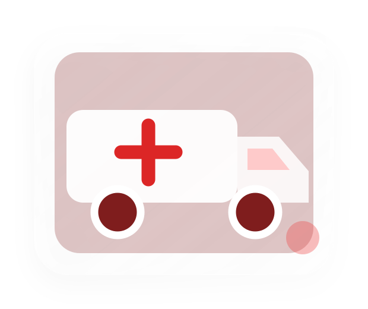

Emergency team readyOpen 24 hours, every day
24/7 emergency & trauma response
Emergency Care
Round-the-clock emergency assessment, stabilization, diagnostics, critical-care coordination, and specialist response for sudden illness and serious injury.
Emergency: +91 11 4567 8900
Open 24/7Emergency care every day
Ambulance accessDedicated emergency entry
Resuscitation baysImmediate stabilization support
Specialist responseOn-call multidisciplinary teams
Department overview
Rapid assessment when every minute matters
The Emergency Department provides immediate assessment for serious illness, injury, and sudden worsening of health. Patients are prioritized according to clinical urgency so life-threatening conditions are treated first.
Emergency physicians and nurses work with critical care, cardiology, neurology, orthopedics, surgery, pediatrics, diagnostics, blood bank, and other specialist teams to stabilize patients and arrange the next level of care.
- Triage on arrivalA trained team assesses urgency, vital signs, symptoms, and immediate safety needs.
- Rapid stabilizationResuscitation, monitoring, pain control, and urgent treatment begin according to clinical priority.
- Connected specialist careOn-call specialists and critical-care teams are involved when needed.
When to seek care
Call for emergency help immediately
Call emergency services immediately for life-threatening symptoms, serious injury, or any condition that could worsen during travel.
Severe chest pain
Chest pressure, tightness, pain spreading to the arm, jaw, neck, or back, or associated collapse.
Severe breathing difficulty
Gasping, choking, blue or grey lips, or inability to speak in full sentences.
Stroke warning signs
Sudden facial droop, arm weakness, speech difficulty, confusion, or loss of balance.
Loss of consciousness
Unresponsiveness, fainting with poor recovery, seizure, or sudden severe confusion.
Heavy bleeding or major injury
Uncontrolled bleeding, serious burns, deep wounds, crushed limbs, or major trauma.
Severe allergic reaction
Rapid swelling, breathing difficulty, widespread hives, collapse, or suspected anaphylaxis.
Call now for a medical emergency
Do not use an online form for an emergency. Call your local emergency number or Mediva Emergency at +91 11 4567 8900. Do not drive yourself when symptoms are severe or you may deteriorate on the way. Call Emergency Now.
Emergency pathway
What happens during emergency care
Emergency care follows a structured pathway based on urgency, immediate threats, required diagnostics, and the safest destination after stabilization.
Immediate triage
Rapid assessment of airway, breathing, circulation, neurological status, pain, injury, and vital signs.
Resuscitation & stabilization
Emergency medicines, oxygen, airway support, bleeding control, monitoring, and other urgent interventions as required.
Rapid diagnostics
Urgent laboratory testing, ECG, X-ray, ultrasound, CT, or other testing according to the clinical situation.
Specialist activation
Prompt involvement of cardiac, stroke, trauma, surgical, pediatric, critical-care, or other on-call teams.
Observation or admission
Continued monitoring, treatment, inpatient admission, critical care, procedure, or discharge planning based on response.
Discharge & follow-up
Clear instructions, medicines, warning signs, and referral for suitable patients who can safely continue recovery at home.
Meet the team
Emergency Care specialists
Experienced clinicians supported by trained nurses, technicians, rehabilitation professionals, and multidisciplinary teams.
Trauma & resuscitation
Critical illness & stabilization
Clinical environment
Facilities that support safer, coordinated care
Purpose-designed spaces and connected hospital services help the team move efficiently from assessment to treatment and recovery.
Resuscitation bays
Fully monitored spaces for immediate stabilization of critically unwell patients.
Available within MedivaDedicated ambulance entry
Direct access for emergency transport and pre-arrival coordination.
Available within MedivaRound-the-clock diagnostics
Emergency laboratory, ECG, imaging, and blood-bank coordination.
Available within MedivaTrauma support
Organized response for serious injury, bleeding, fractures, burns, and surgical emergencies.
Available within MedivaPediatric emergency care
Age-appropriate urgent assessment with pediatric and critical-care support.
Available within MedivaOn-call specialist network
Rapid escalation to cardiac, neurological, surgical, orthopedic, and critical-care teams.
Available within MedivaFrequently asked questions
Helpful information before your visit
These general answers support preparation but do not replace an individual medical assessment.
Non-urgent follow-up
Need non-urgent follow-up after emergency care?
For emergencies, call now. For a stable follow-up appointment, share the discharge specialty and preferred date with our care team.
- Appointment desk: +91 11 4567 8900
- Outpatient support: 8:00 AM – 8:00 PM
- Emergency department: open 24/7
This page provides general service information and is not a diagnosis or substitute for medical advice. Treatment and tests depend on individual clinical assessment. For severe or rapidly worsening symptoms, use emergency services immediately.